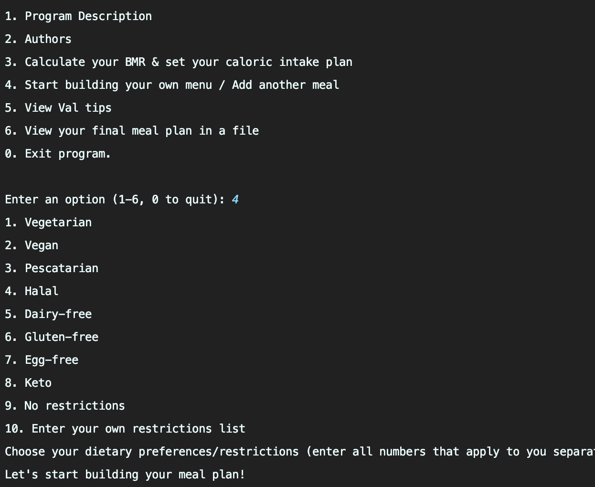

Hi, I'm Angelica.
A tenacious problem solver who enjoys collaborating on finding answers from data
Pursuing a double-major in Computer Science and Statistics at Amherst College (Class of 2024)
Work Experience
Industry

Data Science Intern
September 2022 - Present
- Collaborated on a feature engineering project for agricultural crop price forecasting at an agritech startup that develops algorithmic B2B sourcing and trading strategies.
- Analyzed the market transaction time series data in Python and SQL to statistically create features that improve the performance of the ML-based price prediction model.

Data Science Consulting Intern
May 2022 - August 2022
Conducted a large-scale statistical analysis of 14M+ policyholder data in Python and SQL to develop data-driven sales improvement strategies for a leading property & casualty insurance company.
Academia

Amherst College Data* Mammoths
Student Researcher
January 2023 - Present
Building algorithms for statistically-sound knowledge discovery using R, Java, and Python under the mentorship of Professor Matteo Riondato (Previous Researcher @Two Sigma).

Amherst College Statistics Department
Gregory S. Call Academic Intern
September 2022 - Present
Conducted literature review to investigate the data-generating mechanisms of individually randomized group-treatment trials (IRGT), supporting Professor Brittany Bailey’s research on tackling the inevitable problems of nested clinical trials.
Amherst College Computer Science Department
Teaching Assistant
September 2022 - December 2022
- Supported lab sessions to guide students though difficult class concepts for Introduction to Computer Science II.
- Held weekly office hours to provide one-on-one support for the students struggling with lab assignments in Java.
Projects
Agricultural Crop Price Prediction
- Built LSTM models to perform crop price forecasting from the 3-year Korean agricultural market transaction time series data
- Improved the performance by 60%, relative to the ARIMA model in economics
- Used the NVidia RTX A5000 GPU Server on theAmherst College High-Performance Computing Clusterfor training the models


Crop Quality Prediction
- Analyzed the factors explaining crop quality to establish a data-driven quality grading system and help develop a fair value of the crops
- Compared the performance of three classification models (decision trees, random forests, SVM)
- Conducted factor analysis to discover latent relationships in the agricultural data that may be reflective of crop quality
Health Care Equity
- Deployed an interactive app and blog in group of 3 to analyze the root causes of systemic health inequities and the effectiveness of public health insurance
- Performed spatial data visualization, clustering analysis, and text analysis using R and Shiny


Val Meal Planner
- Spearheaded the development of a meal planning program tailored to students' dietary needs in Java
- Automated the menu data collection process via web scraping in R, accelerating the workflow by 200%
Calendar: How Do I Spend My Time?
- Constructed a time tracking report for better self-evaluation of productivity, physical and mental well-being
- Performed data analysis, wrangling, and visualization in R and LaTex
Research

Analysis of Spatial Density Utilizing The Big Data of Floating Population of Seoul City
- Addressed inconveniences often experienced by foriegn tourists in Seoul, Korea, by analyzing and visualizing their travel behavior from their mobile phone call record data in R and QGIS
- Created a Tableau dashboard that tracks travel patterns by nationality and time
- Formulated a policy proposal on marketing different segments of tourists to promote cultural heritage tourism, adopted by Cultural Heritage Administration of Korea
- Presented a first-authored research paper in reputed international conferences:
- Women in Data Science Cambridge 2021 Conference Presentation
- Free and Open Source Software for Geospatial 2015 Conference Best Oral Presentation Award
 >
>
© Copyright Angelica Kim